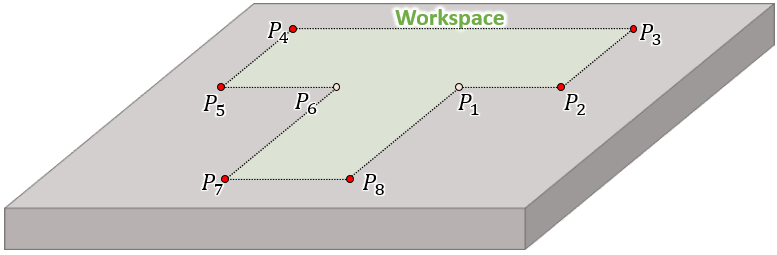
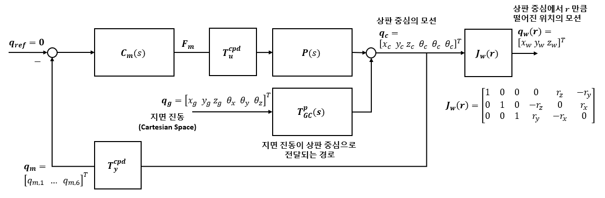

작업별 맞춤 제진 제어기 자동 설계 · 연구 목표 및 기여 정리
연구 목표: 무게 편향이 있는 제진 시스템에서, 작업별 영역 및 범위에 맞춘 최적 제어기 자동 설계 기법 개발.
연구의 필요성
1. 작업이 바뀌면 필요한 제진 영역도 달라진다.
- 정밀 작업이 수행되는 위치와 범위는 작업의 종류와 장비·시편의 배치에 따라 달라진다.
- 따라서 사용자가 지정한 작업 영역 및 범위와 목표 전달률에 맞춰 제어기를 설계할 필요가 있다.
핵심 설계 문제
1. 작업 영역 전체에서 요구 제진 성능을 어떻게 만족시킬 것인가?
- 회전 중심 부근의 작은 작업 영역에서는 병진 진동 억제만으로 요구 성능을 만족할 수 있다.
- 작업 영역이 회전 중심에서 멀어지거나 넓어질수록 회전에 의한 변위가 커지므로, 병진과 회전의 기여를 함께 고려해 제어기를 설계해야 한다.
2. 필요한 범위보다 넓은 작업 영역을 보호하면 어떤 제어 부담이 발생하는가?
- 필요 이상으로 넓은 작업 영역에 요구 성능을 보장하려면 더 강한 진동 억제가 필요할 수 있으며, 이는 Noise에 대한 민감성과 각 구동기의 Control effort 증가로 이어질 수 있다.
3. 작업 영역의 목표 성능을 만족하려면, 어떤 모드를 억제하는게 효율적일까?
- 동일한 작업 영역의 목표 성능을 만족하는 제어 배분은 여러 가지일 수 있다.
- 예를 들어, Z 방향 진동 억제에 중점을 두거나 Roll 방향 진동 억제에 중점을 두는 서로 다른 배분으로 목표 성능을 만족할 수 있다.
- 따라서 목표 성능을 만족하는 배분 중, 잡음 영향과 제어 부담을 고려해 유리한 배분을 선택해야 한다.
제안하는 제어기 설계 방식 흐름도
Contribution 1 : 작업 영역 성능을 보장하는 모달 제어기 설계와 Noise 민감성 및 Control effort를 고려한 모드 선택 기법
1. 작업 영역 전체에서 요구 제진 성능을 만족시키는 방법
- 핵심 : 강체 동역학을 기준으로 작업 영역에서 진동이 가장 크게 발생하는 위치들을 식별하고, 해당 위치들에서 목표 제진 성능을 만족시킨다.
① 작업 공간에서 진동이 가장 크게 발생하는 위치를 식별한다.


- 작업 영역 내부의 모든 점의 좌표는 지정한 꼭지점 좌표의 가중 평균으로 표현된다.
경계 꼭지점의 좌표를 입력한다. 고정 높이 \(h\)에서 그림의 여덟 꼭지점 \(P_i\)의 좌표를 다음과 같이 둔다.
각 꼭지점을 나머지 꼭지점의 가중 평균으로 표현할 수 있는지 검사한다. 각 \(i\)에 대해 다음 조건을 만족하는 가중치 \(\lambda_j\)가 존재하는지 확인한다.
- 가중치가 존재하면 후보에서 제외한다.
- 가중치가 존재하지 않으면 최악의 진동이 발생할 수 있는 위치로 선정한다. 남는 점들은 작업 영역의 볼록껍질 꼭지점이다.
(예시) 최악의 진동이 발생할 수 있는 위치 후보는 다음과 같다.
② 작업 공간에서 목표 성능 조건을 만족할 수 있는 조건을 도출한다.
작업 영역 내부의 모든 위치는 선별한 후보 좌표의 가중 평균으로 표현된다.
최악 진동 후보 위치의 진동 \(\boldsymbol q_w(\boldsymbol r_i)\)과 작업 영역 내부 위치의 진동 \(\boldsymbol q_w(\boldsymbol r)\)은 상판 중앙의 병진·회전 진동 \(\boldsymbol q_c\)와 각 위치의 변환행렬 \(\boldsymbol J_w\)를 이용해 다음과 같이 표현되며,
내부 위치의 진동 또한 최악의 위치 후보의 진동의 가중 평균으로 표현된다.
각 방향에서 내부 위치의 진동 크기는 같은 방향의 후보 위치 진동 크기 중 최대값 이하이다.
지면 입력에서 작업 위치의 진동으로 전달되는 관계를 다음과 같이 정의한다.
상판 위치 \(\boldsymbol r\)로 전달되는 경로 \(\displaystyle\underbrace{\boldsymbol q_g}\)지면
진동 \(\displaystyle.\)
블록다이어그램에서 상판 중심의 폐루프 전달률에 위치 변환행렬을 적용하면, 작업 위치의 전달률은 다음과 같다.
\(\boldsymbol P\)는 구동기 입력에서 상판 중심 모션으로의 전달행렬, \(\boldsymbol C_m\)은 모달 제어기이며, \(\boldsymbol T_{GC}^{p}\)는 지면 진동에서 상판 중심 모션으로의 passive 전달률이다.
진동의 가중 평균 관계가 모든 지면 입력에 대해 성립하므로, 전달행렬도 후보 위치 전달행렬의 가중 평균이다.
③ 선정한 후보 위치에서 전달률 요구조건 \(R(j\omega)\)를 만족시키면 모든 작업 영역에서 요구 조건을 만족한다.
따라서 모든 후보 위치에서 목표 전달률을 만족하면 작업 영역 전체에서도 만족한다.
(목표 제진 성능) \(\displaystyle,\qquad\forall\boldsymbol r\in\mathcal A.\)
2. Noise 민감성 및 Control effort를 고려하여 어떤 모드를 이용하여 목표 전달률을 달성할지 정하는 방법
- 핵심 : 작업 위치의 전달률을 모드별 sensitivity로 표현하고, 모드 사이의 교차항을 제한하여 각 모달 제어기가 만족해야 하는 성능 조건을 도출한다.
\(\boldsymbol T_{GW,[d,:]}^{\mathrm{cl}}\)은 여섯 지면 입력에 대한 전달률을 모은 행벡터이므로, 2-norm은 다음과 같이 정의된다.
각 원소 \(T_{GW,[d,j]}^{\mathrm{cl}}\)을 앞의 블록다이어그램과 전달률 식에 사용한 행렬로 풀어 쓴다. \(j\)는 지면 입력, \(k\)는 모드의 인덱스다.
각 모드의 폐루프 전달률은 모드별 Sensitivity와 passive 전달률의 곱으로 표현한다.
\([k,:]\)는 모드 \(k\), \([d,:]\)는 출력 방향 \(d\)에 대한 여섯 지면 입력의 전달률을 모은 행을 뜻한다. 따라서 출력 방향 \(d\)의 전달률은 여섯 모드의 기여 합이다.
각 후보 위치 \(i\)와 방향 \(d\)에서, 변환계수와 passive 전달률의 내적을 \(Q_{[k,j]}\)로 묶는다.
이를 이용하면 각 모드의 크기 항과 모드 사이의 교차항을 다음과 같이 표현할 수 있다.
이를 위 식의 교차항에 대입하면, 작업 위치의 전달률 상한은 다음과 같다.
Control effort의 상한을 고려하여 모드별 진동 억제 부담을 배분한다. 모드별 Control effort 전달함수와 플랜트 크기를 다음과 같이 둔다.
Sensitivity의 크기가 \(|S_{m,[k]}|=\overline s_k\)이면, Control effort의 크기는 다음 범위에 놓인다.
이 상한을 고려하여, 플랜트 크기가 큰 모드에 더 강한 진동 억제를 배분한다.
각 항의 허용량을 플랜트 크기의 역수로 배분한다.
배분한 허용량의 합이 목표 전달률의 제곱이 되도록, 정규화 값을 다음과 같이 정의한다.
각 모드의 대각항에는 해당 플랜트 크기 제곱의 역수에 비례하여 허용량을 배분한다.
두 모드 사이의 교차항에는 두 플랜트 크기 곱의 역수에 비례하여 허용량을 배분한다.
교차항의 조건을 만족시키도록, 각 모드의 Sensitivity 상한을 다음과 같이 정한다.
두 상한을 곱하면 앞의 교차항 조건을 만족한다. 이는 교차항 조건을 보장하는 개별 충분조건이며, \(Q_{[k,j]}=0\)인 교차항은 제약에서 제외한다.
모든 후보 위치와 요구 방향, 대상 주파수에서 위 조건을 적용하면 작업 영역 전체의 목표 전달률을 만족시키는 충분조건이 된다.
앞의 교차항에 대한 개별 Sensitivity 상한을 대입하면, Control effort의 상한은 다음과 같다.
목표 전달률을 만족시키면서, Control effort 상한에 플랜트 크기가 반영되도록 배분한다. 위 상한은 대각항과 나머지 교차항의 조건을 함께 적용해도 유효하다.
설계 메모
Contribution 2 · 실험적 검증
작업 영역의 위치·범위에 따른 모달 배분과 제진·잡음 성능을 비교한다.
- 같은 크기·다른 위치: 유리한 모달 배분과 제어기가 달라지는지 확인한다.
- 같은 중심·다른 범위: 성능 요구와 잡음 응답의 절충이 달라지는지 확인한다.
- 공통 제어기와 영역별 제어기: 동일한 가진·측정 조건에서 해당 작업 영역의 전달률과 잡음 응답을 비교한다.
선행연구 조사 정리
아래 표는 기존 조사 축에 따른 기록이다. 현재의 작업별 자동 설계 목표와 직접 대응하는 비교·평가는 추가로 정리한다.
O 명시적으로 다룸 · △ 일부 관련되거나 제한된 범위에서 다룸 · X 해당 설계 목표를 다루지 않음
| 논문 | 핵심 1 작업 영역 크기를 고려한 회전 제어 | 핵심 2 위상에 따른 위치별 진동 상쇄 고려 | 핵심 3 무게 편향에 의한 병진·회전 커플링 처리 |
|---|---|---|---|
| 3 · Modal Decomposition and Sliding Surface Optimization Ding et al., ACC 2011 | X | X | O |
| 4 · Suppression in any configuration Gong et al., MSSP 2022 | △ | X | O |
| 5 · Dynamic error budgeting based robust system and control co-design Spanjer et al., Mechatronics 2025 | △ | △ | X |
| 7 · Non-diagonal H-infinity Weighting Function Design Boeren et al., CEP 2015 | △ | △ | △ |
| 8 · Tensor Methods for MIMO Decoupling and Control Design Using FRFs Stoev et al., Mechatronics 2017 | X | X | O |
판정 기준: 핵심 1은 단순한 회전 제어가 아닌, 공간 범위·기하 조건을 회전 제어의 성능 목표에 연결하는지를 본다. 핵심 3의 O는 모델 기반 병진·회전 커플링 처리 방법을 명시한 경우이며, 임의의 무게 편향에서 완전 상쇄를 보장한다는 뜻은 아니다. 핵심 2의 △는 MIMO 모델이나 운동 방향을 통해 합성 정보를 반영하지만 위치별 위상 상쇄를 별도 요구조건으로 다루지는 않는 경우다.
현재 상세 비교에 포함된 논문 3–5·7–8의 1차 정리다. X는 해당 방법의 구현 불가능성을 뜻하지 않으며, 이 표만으로 선행연구 부재나 제안 방법의 신규성을 판단하지 않는다.
선행연구 비교
| 논문 제목 | 논문 목표 및 방법 | 이 논문의 기여 | 이 논문의 한계점 | 제어기 설계 도메인 | 비고 |
|---|---|---|---|---|---|
| [American Control Conference (ACC)] Robust Vibration Isolation of a 6-DOF System Using Modal Decomposition and Sliding Surface Optimization Ding et al., ACC 2011 |
주파수별 모달 전달률 요구조건을 만족하면서, 센서 잡음을 포함한 전달 응답 상한의 최대값 최소화. 모달 분해 후, 상대 변위·절대 가속도 기반 sliding surface의 계수를 최적화. 선형 regulator로 설계 응답에 근접시키는 이득 조건 제시. \[T_{di}=\frac{\Lambda_{Ri}}{\Lambda_{Ai}s^2+\Lambda_{Ri}}\]
\[\min_{\boldsymbol a}\sup_\omega\overline{|T_{di}|}\]
|
Sliding surface 필터와 전달률·센서 잡음 전달 특성의 관계를 정식화하고, 안정성·주파수별 요구조건 아래 수치 최적화. | 비례감쇠 기반 모달 분리 가정. 구체적인 regulator 구조·계수 및 실험 검증 없음. 전역 최적해 미보장. | Modal space 모델 고유벡터 기반 분해 CPD 아님 |
보조 참고 문헌 모달 요구조건은 사전 지정. 작업 영역 요구조건에서 유도하지 않음. Fig. 6·7: 설계 응답 상한. H∞ 합성 아님. |
| [Mechanical Systems and Signal Processing] Suppression in any configuration: A versatile coupling improved multi-objective manipulation framework for modular active vibration isolation system Gong et al., MSSP 166 (2022), 108478 논문 원문 |
모듈형 6자유도 제진대의 커플링을 줄이고, 상대 위치 유지·절대 가속도 억제·제어력 제한을 함께 달성. 구동력 분배와 모델 기반 역시스템 디커플링 후, 축별 혼합 \(H_2/H_\infty\) 동적 출력 피드백 제어기를 LMI로 합성. 상대 위치에 \(W_1\), 가속도에 \(W_2\) 적용. \[W_i^{-1}=\frac{k_{Hi}s+k_{Li}\omega_i}{s+\omega_i}\]
\[\min\;\alpha\gamma_0^2+\beta\operatorname{tr}(\boldsymbol Q)\]
|
모듈 배치에 대응하는 구동력 분배·디커플링과 다목적 제어 합성을 통합. 축별 합성으로 제어기 차수를 낮추고 시뮬레이션·실험으로 검증. | 모델·소각도 근사에 의존하며 실험에 잔여 커플링 존재. 작업 영역 요구조건에서 가중함수를 유도하지 않음. \(H_2\) 조건만으로 주파수별 전달률 상한은 보장되지 않음. | Cartesian coordinates 역시스템으로 분리한 병진·회전 6개 채널 고유모드·CPD 아님 |
가중함수 파라미터 사전 지정. 회전도 설계 대상이나 상세 합성은 \(x\)축 예시. Fig. 12 제진 실험은 \(x,y\)축, 1–200 Hz의 15개 가진 주파수. Fig. 10–11 회전 포함 검증은 PID 사용. |
| [Mechatronics] Dynamic error budgeting based robust system and control co-design for active vibration isolation systems Spanjer et al., Mechatronics 107 (2025), 103309 논문 원문 |
상판 위 장비 내부의 상대 변형 power(평균제곱 크기) 최소화. 실험 장비의 내부 운동은 수직 상대 운동(Piston)과 두 방향 상대 기울어짐(Tip·Tilt). 지면 진동·센서 및 구동기 잡음의 스펙트럼으로 입력 가중함수를 구성. 내부 변형의 \(H_2\) 성능을 최소화하면서 \(H_\infty\) 강인 안정성·구동기 출력 제약 적용. 제어기와 강성·감쇠·구동기 크기를 동시 최적화. \[\min\;\|\boldsymbol W\boldsymbol G\boldsymbol V\|_2^2\]
|
Dynamic error budgeting을 입력 스펙트럼 기반 가중함수와 연결. 잡음·강인성을 고려한 구조화 제어 및 기계·제어 동시 최적화. 6축 실험에서 내부 변형 power를 기존 대비 2.3–4.1배 개선. | 가정한 외란·잡음 스펙트럼과 모델에 의존. 주파수별·작업 영역 전체의 전달률 상한 보장은 아님. 기계·제어 동시 최적화는 단일 축 모델, 6축 실험은 제어기 최적화 검증. | 센서 좌표 기반 MIMO 구조화된 피드백·피드포워드 CPD 아님 |
전달률 자체보다 내부 상대 변형의 평균제곱 크기를 최소화. 입력 가중함수: 스펙트럼 기반. 실험 지면 가진: Z·Roll·Pitch. 내부 변형 센서는 검증·모델링용. |
| [Control Engineering Practice] Non-diagonal H-infinity Weighting Function Design: Exploiting Spatio-temporal Deformations in Precision Motion Control Boeren et al., Control Engineering Practice 35 (2015), 35–42 논문 원문 |
여러 운동 축에 걸쳐 나타나는 유연 공진을 억제하여, 외란에 의한 정밀 스테이지의 위치 제어 오차 감소. 저주파 강체 운동과 유연 공진 대역에 서로 다른 디커플링 변환을 구성. 변환을 비대각 가중함수에 포함하여 공진 방향에 선택적으로 감쇠를 요구하고, \(H_\infty\) loop-shaping 제어기 합성. \[\boldsymbol P_s=\boldsymbol W_2\boldsymbol P\boldsymbol W_1\]
\[\boldsymbol C=\boldsymbol W_1\boldsymbol C_s\boldsymbol W_2\]
|
주파수 대역별 운동 방향을 가중함수에 반영하는 절차 제안. 같은 목표 교차 주파수에서 대각 가중함수와 비교하여, 모델상 관련 외란 응답 특이값 약 6 dB 감소 및 실험 위치 오차 감소 확인. | 방향 분리와 공진 지배성에 관한 가정 및 모델에 의존. 실험은 특정 스테이지·가진 대역에서 검증. 작업 영역의 전달률 요구조건을 독립 모달 상한으로 변환하거나 보수성 우위를 입증한 연구는 아님. | 운동 좌표 기반 MIMO 실험 핵심: Z·Roll·Pitch 대역별 디커플링을 가중함수에 포함 CPD·독립 모달 SISO 합성 아님 |
정밀 위치 제어 연구이며 AVI 자체는 아님. 주요 공진 129 Hz, 목표 교차 주파수 28 Hz. 물리적 운동 조합을 가중함수에 반영하는 비교 사례. |
| [Mechatronics] Tensor Methods for MIMO Decoupling and Control Design Using Frequency Response Functions Stoev et al., Mechatronics 45 (2017), 71–81 논문 원문 |
측정 잡음과 주파수 선택에 덜 민감하도록, 관심 대역의 MIMO FRF를 공통 정적 변환으로 분리하고 채널별 제어 설계 지원. 여러 주파수의 FRF를 텐서로 쌓아 CPD로 실수 입출력 인자와 대각 채널 FRF 추정. 관심 대역에 맞춰 전처리·가중하고, 분리한 채널에 SISO PID 설계. \[\boldsymbol H(j\omega)\approx\boldsymbol T_y\boldsymbol S(j\omega)\boldsymbol T_u\]
|
다중 주파수 FRF 기반 CPD 정적 디커플링 제안. 단일 주파수 고유값 분해 대비 잡음·주파수 선택에 대한 민감도 개선을 사례로 제시하고 제어 설계에 연결. | 정확한 분리는 일반적으로 보장되지 않음. 대역·전처리·가중 선택 필요. AVI 검증은 인위적으로 재커플링한 2×2 FRF이며, AVI 제진 제어기 구현 검증은 아님. | CPD로 분리한 채널 SISO PID 설계 분리 채널과 물리적 고유모드의 동일성은 일반적으로 보장되지 않음 |
CPD 방법의 근거 문헌 제어 설계 사례: 날개 Pitch·병진 장치. 목표: 대역폭 >15 Hz, PM >60°, GM >10 dB, sensitivity 피크 <3 dB. 작업 영역 요구조건의 모달 배분은 다루지 않음. |